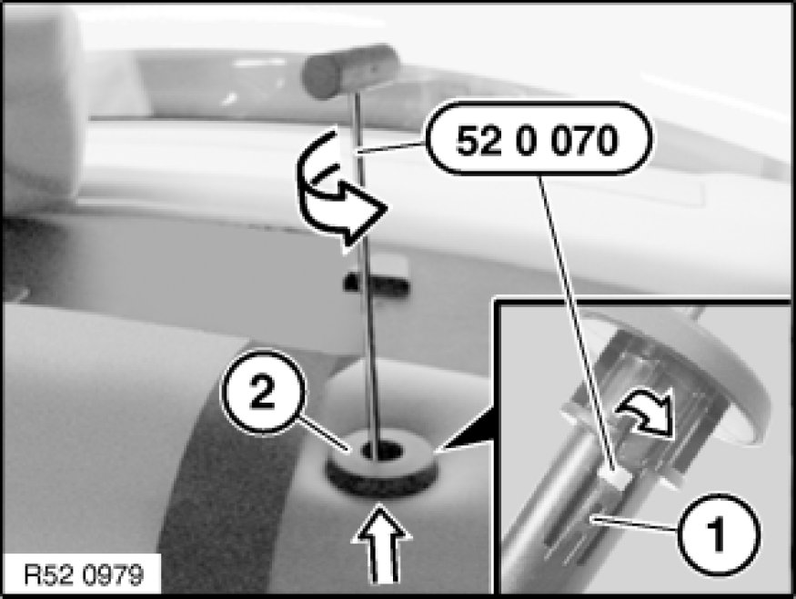

Removing and Installing/Replacing All Guide Sleeves for Rear Head Restraints
52 26 ... - Removing and installing/replacing all guide sleeves for rear head restraints

Special tools required:
- 52 0 070 52 0 070 Release Hook

Necessary preliminary tasks:
- Remove head restraint Removing and Installing/Replacing Left or Right Rear Head Restraint from rear seat

Note:
Guide sleeves cannot be removed without being damaged.
Guide sleeves with locks have two retaining lugs.
Insert special tool 52 0 070 52 0 070 Release Hook into guide hole of sleeve (2) up to upper area of retaining lug.
Feed release tongue of special tool into rear gap on retaining lug (1).
Turn tool to release sleeve (2) and pull out towards top.
On guide sleeves with locks, unlock the second retaining lug with a screwdriver.